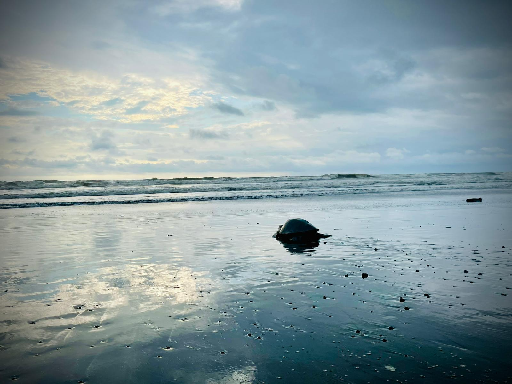

Proteger nidos, apoyar patrullajes y convertir a una especie vulnerable en una misión compartida.
La conservación de tortugas marinas combina ciencia, participación comunitaria y momentos visibles de éxito. Monitoreamos playas, reubicamos nidos cuando es necesario y rastreamos el éxito de eclosión para asegurar su paso seguro al mar.
Acción en el campo con emoción
Nuestro programa protege especies de tortugas marinas en peligro a través de la investigación, el monitoreo de nidos y la participación comunitaria.
Monitoreo de playas, reubicación de nidos cuando es necesario y seguimiento de las tasas de eclosión.
Equipos de campo y voluntarios de la comunidad trabajando juntos en la protección de la costa durante la temporada de anidación.
Eventos comunitarios de alta emoción que refuerzan el valor de la conservación y el apoyo para las futuras generaciones.
El financiamiento se convierte en acción en el terreno.
Cada contribución apoya directamente a los biólogos, el equipo y los patrullajes que protegen a las tortugas marinas de Corcovado.
Construyendo vida juntos
Cada programa es parte de un ecosistema de conservación más grande. Descubre cómo trabajan juntos para proteger Corcovado.